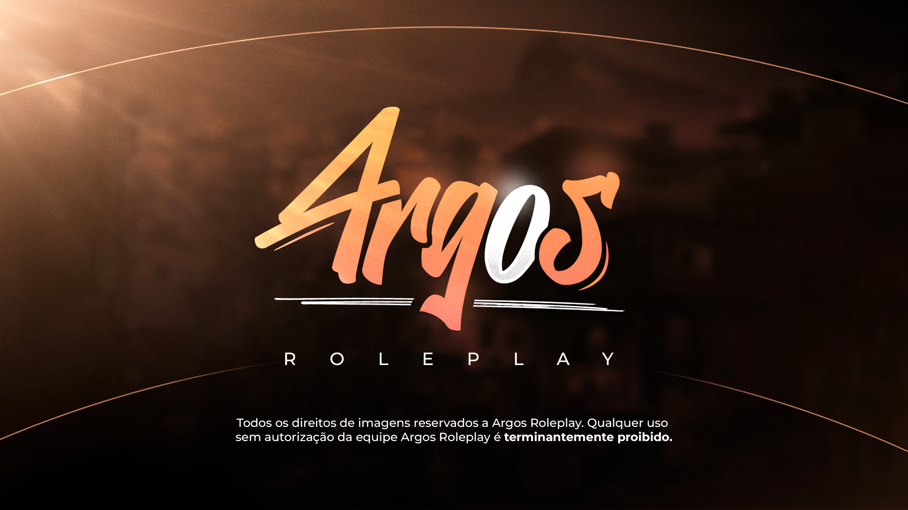

Login por Discord
Entrada central para liberar área do jogador, compras e identificação da conta no site.
O site do Argos RJ foi pensado para o player que quer acompanhar tudo em um só lugar: entrar pelo Discord, confirmar a conta do jogo, acessar a loja com segurança e gerenciar caixas, skins e histórico dentro do dashboard.

Em vez de uma home genérica, a página inicial agora apresenta o ecossistema do servidor como um produto real para quem chega pela primeira vez.
Entrada central para liberar área do jogador, compras e identificação da conta no site.
Fluxo preparado para confirmação dentro do MTA antes de liberar compras finais.
Itens organizados com descrição ampliada e compra travada para contas não confirmadas.
Tudo separado para o player encontrar respostas, abrir suporte e entrar no Discord oficial.
Além da loja e do painel, o site também organiza páginas para dúvidas comuns, regras gerais e abertura de suporte.